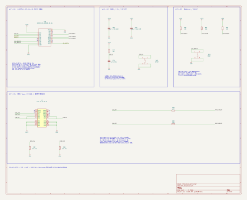

ESP32-C3-WROOM-02-N4
外围电路与 GD32 OTA / IAP 设计说明
工程：GD32F303VET6_4Motor_Control · 2026-10-23 · 交付：原理图、项目符号修正、升级设计说明
硬件已接线：U26 移入 WiFi_OTA.kicad_sch 子页，接到 MCU_Core；包含供电去耦、EN 延时、BOOT/RESET 按钮、Type-C 原生 USB 下载口、UART1 通信及 GD32 开漏复位。固件尚未实现 OTA / IAP，PCB 尚未同步。
GD32 Bootloader → 验证与安装 → GD32 应用 → 健康确认 / 失败回滚
1. 实际原理图与修改内容
放大 Wi-Fi 原理图 · MCU_Core 接线 · 检查结果


- U26 已改为 ESP32-C3-WROOM-02-N4，保留原 U26 位号与实例 UUID；使用你新放置的 WROOM 符号替换，删除未连接的重复占位 U27。原理图所选封装同步切换为 kicad_api_lib:ESP32-C3-WROOM-02-N4。
- 精简后保留 R79～R82、R87～R90、C68～C70、SW2、SW3、J3，共 14 个外围元件，连 U26 共 15 个。删除 UART 串联电阻 R83/R84、复位 MOS Q18 及 R85/R86、外置 USB ESD D22 及 C71。Type-C 的 R87～R90 为 0402，其他电阻电容为 0603。J3 为 TYPE-C-31-M-31。
- PD8/55、PD9/56 移除原未连接标记，接入 UART。其他原有电气连接经导出网表对比保持不变。
- 本次按官方数据手册核对 WROOM 的 19 个引脚，重新接线并同步图纸注释；9/19 脚接地，模块内 4 MB Flash，PCB 天线。
- 本次替换只修改 WiFi_OTA 原理图及对应说明，采用已有项目 WROOM 符号与封装；PCB 和固件源码未改。
2. 接线与取值
| 功能 | ESP 模块引脚 | 连接对象 | 电路 |
|---|---|---|---|
| 供电 | 1 / 3V3 | 板上 +3V3 | C68：10 µF / 10 V X5R；C69：100 nF / 16 V X7R；紧贴模块 |
| ESP 发送 | 3 / GPIO4，UART1 TX | U7.56 / PD9，USART2 RX | 3.3 V UART 直接连接 |
| GD32 发送 | 4 / GPIO5，UART1 RX | U7.55 / PD8，USART2 TX | 3.3 V UART 直接连接 |
| EN / 复位 | 2 / EN | R79 上拉 3V3；C70、SW2 接地 | 10 kΩ + 1 µF；SW2 按下复位 ESP |
| 启动配置 | 16 / GPIO2、7 / GPIO8、8 / GPIO9 | R80、R81、R82 分别上拉 3V3 | 各 10 kΩ；SW3 将 GPIO9 拉低 |
| GD32 远程复位 | 10 / GPIO10 | GPIO10 直接连接 U7.14 / NRST | GPIO10 必须配置开漏：输出 0 复位，高阻释放；复用 MCU 原有 R17/C39 |
| Type-C 原生 USB 下载 / 日志 | 14 / GPIO19 = D+；13 / GPIO18 = D− | J3：A6/B6 并接 D+，A7/B7 并接 D−；经 R89/R90 连接模块 | R89/R90 各 22 Ω；CC1/CC2 各自通过 R87/R88（5.1 kΩ）下拉；精简版不装外置 USB ESD 保护 |
| USB VBUS 与外壳 | USB VBUS 不接模块电源 | J3 的全部 VBUS 脚标记未连接；信号地接 GND；外壳接 Earth | 板卡自供电，不由此 USB 口给整板供电 |
| 地 | 9、19 | 全部接 GND | 包括底部 19 焊盘，不得漏焊 |
| 未使用 | 其他 GPIO、全部 NC | 标未连接 | 原 UART0 的模块 11/12 脚已标未连接；维护改用原生 USB |
ESP 与 GD32 同为 3.3 V 逻辑，无需电平转换；软件显式把 UART1 映射到 GPIO4/5。ESP-IDF UART 文档
模块含 4 MB Flash、晶振和射频电路，不另加外置晶振与射频匹配。本次采用 N4 型号，工作温度 −40～85°C，模块尺寸为 18 × 20 × 3.2 mm；与 MINI 的封装不兼容，后续 PCB 必须更换焊盘布局并重新核对天线净空。官方模块数据手册
GPIO10 与 NRST 直连，必须使用开漏输出，禁止推挽输出高电平。输出 0 拉低复位；高阻（开漏输出 1）释放，复用原有 R17/C39 上拉与滤波。这样允许 ESP、SW1 和调试器共同复位 GD32。此接法依赖双方共用板上 3V3；若改成独立供电，须重新设计掉电隔离。正常 IAP 可由 GD32 自行复位；GPIO10 用于旧应用无响应时的恢复。BOOT0 不由 ESP 控制。
3. 上电、下载与布局
- 3V3 上电后 EN 延迟拉高；GPIO2/8/9 保持高，ESP 从自身 Flash 启动。GPIO10 默认保持高阻；启用开漏前先将输出锁存置 1，避免意外拉低 GD32 NRST。
- ESP 下载：板卡先由原有电源上电，再接 J3 Type-C 数据线。使用原生 USB Serial/JTAG 端口执行 esptool / idf.py flash；通常可自动进入下载。若应用禁用 USB 或重配 GPIO18/19，按住 BOOT，按下并释放 RESET，再释放 BOOT，进入 ROM 下载。UART1 仍用于 GD32 通信。
- GD32 首次经现有 SWD 烧录 Bootloader 和匹配地址的应用。BOOT0 保持正常 Flash 启动配置；本方案是自定义 IAP，不依赖 ROM ISP。
ESP 支路应预留至少 500 mA 供电能力，并叠加全板其他负载；这不是模块的持续电流。本次沿用板上 3V3，未新增稳压器，现有供电余量仍需在 Wi-Fi 发射和电机工作时实测。EN 使用 10 kΩ / 1 µF。官方电源与 EN 建议
PCB 将天线区域伸至底板外，或依官方指南留足净空；避开铜皮、走线和金属外壳。你的板下有金属安装板，应让天线区域避开金属板覆盖。C68/C69 靠近供电脚，EN 走线短，全部地焊盘可靠接地。官方布局指南
0603 / 10 µF 要按具体料号校核直流偏压下的有效容量。J3 为 USB 2.0 Type-C 设备口，R89/R90 靠近模块；D+/D− 按 90 Ω 差分布线并避免分支。本次已核对 WROOM 连接脚号与封装焊盘编号；未修改封装几何，也未做 PCB 更新。
2026-10-23 接口更新：采用 ESP32-C3 原生 USB Serial/JTAG，可用于下载与串口日志；固件配置 CONFIG_ESP_CONSOLE_USB_SERIAL_JTAG，勿改作普通 GPIO18/19，下载调试期间避免深度睡眠。USB 单独插入不会给整板供电。Espressif 原生 USB 文档
4. OTA / IAP 分工与协议
| 部分 | 职责 |
|---|---|
| ESP32 应用 | 定制 ESP-IDF 固件：配网、HTTPS 下载、目标 / 版本检查、UART 分包、进度查询和重试。仅烧默认 AT 固件不能完成此方案。 |
| GD32 应用 | 接收升级命令；停机刹车；候选镜像写 U8；验证后提交安装请求。 |
| GD32 Bootloader | 保持电机安全状态；初始化 SPI0 和 USART2；验证、安装、断电续装、回滚；验证向量表后跳转应用；无有效应用时提供串口恢复。 |
| U8 GD25Q16ESIGR | 沿用 GD32 SPI0 总线，存候选包、已确认旧版备份及双份状态；ESP 不直接占用 U8 总线。 |
建议先用 115200、8N1、无硬件流控，每块 1 KiB，停等 ACK；提速需实测擦写时序与缓冲。帧字段：同步字、协议版本、类型、会话 ID、序号、镜像偏移、长度、数据、CRC32。所有长度和地址都做边界检查；重复块可确认，但安装命令不可重复执行。
命令建议：HELLO、GET_STATUS、BEGIN_IMAGE、WRITE_CHUNK、FINISH_IMAGE、INSTALL、CONFIRM、ABORT。CRC 只检误码；完整镜像做 SHA-256 并验证发布签名。清单含 MCU / 板型、长度、应用起始地址、版本、最低 Bootloader 版本和哈希；签名覆盖元数据与镜像哈希，由 Bootloader 预置公钥验证。HTTPS 校验服务器证书；目标、边界、签名任一失败均不得擦内部 Flash。
ESP 自身升级和 GD32 升级分开处理：ESP 自身用 ota_0、ota_1、otadata；GD32 bin 作为外部 MCU 数据传送，不能写入 ESP 的 app OTA 分区。ESP-IDF OTA 文档
5. Flash 分区建议
GD32F303VET6 为 512 KiB Flash 型号。下表是待链接验证的初始规划，不是当前已生效的分区。64 KiB Bootloader 是否足够取决于签名库等代码大小；调整时必须同步应用链接地址、VTOR 和升级清单。GigaDevice 型号资料
| GD32 内部 Flash | 地址（含首尾） | 容量 / 约束 |
|---|---|---|
| Bootloader | 0x08000000～0x0800FFFF | 64 KiB；SWD 首次烧录，启用相应写保护；常规 OTA 不覆盖 |
| Application | 0x08010000～0x0807EFFF | 444 KiB；独立链接到起始地址，VTOR 同步 |
| 原参数日志 | 0x0807F000～0x0807FFFF | 4 KiB，保留两个 2 KiB 页，IAP 禁止擦除 |
现有 firmware/linker/gd32f303xE_flash.ld 仍使用起始 0x08000000、长度 508 KiB；robot_store.h 的 STORE_BASE 为 0x0807F000。本次未改源码，因此现有编译产物不能直接当作上述新地址的 OTA 应用。
| U8 外部 2 MiB Flash | 地址（含首尾） | 用途 |
|---|---|---|
| Candidate | 0x000000～0x07FFFF | 512 KiB：候选镜像与签名清单 |
| Backup | 0x080000～0x0FFFFF | 512 KiB：已确认旧应用及可验证元数据 |
| Metadata A / B | 0x100000～0x100FFF0x101000～0x101FFF | 各 4 KiB：状态、序号、进度、尝试次数、CRC、提交标记 |
| 用户数据 / 预留 | 0x102000～0x1FFFFF | 1016 KiB；部署前核对已有数据，不直接整片擦除 |
ESP 内置 4 MB 用于自身双 OTA 槽、NVS 与状态；GD32 镜像流式送至 U8，不要求 ESP 另存完整镜像。本设计不新增 Flash。U8 写入按页编程、扇区擦除边界拆分，等待忙状态并回读验证。
6. 更新状态与断电恢复
- 接收：只写 Candidate，当前应用保留；中断可按会话、哈希和已校验块恢复。未完整镜像不能进入安装状态。
- 验证：完成目标、长度、SHA-256、签名检查，确认电机停止，再提交安装请求。
- 备份：保留已确认旧版和可验证元数据；备份未完成或验证失败，不得擦当前有效应用。
- 安装：先持久化 INSTALLING，再逐页擦写应用并回读，成功后记录进度；禁止擦 Bootloader 与参数区。
- 续装：启动读最新有效状态；INSTALLING 从候选包恢复。未确认完成的页重新擦写，不跳入半写应用。
- 试运行：内部 Flash 再次校验，MSP / 复位向量通过范围验证；记录 TRIAL 和计数后跳转。新应用通过自检及观察窗口才 CONFIRM，不自动启动电机。
- 回滚：试运行超时、反复看门狗复位（建议最多 3 次）或校验失败，恢复已验证 Backup。无有效备份则保持停止并等待串口恢复。
Metadata A/B 轮换写：正文和 CRC 在先，提交标记最后写；只擦不含最新有效状态的扇区。必须实测每个关键断电点，上述流程尚未通过实际固件验证。
应用卡死时，ESP 可在停机维护流程内将 GPIO10 以开漏方式拉低约 10 ms，再释放为高阻。Bootloader 每次启动留恢复握手窗口（如 1 s），ESP 在窗口发送恢复请求；无有效应用则持续等待。这样不依赖旧应用回应。ESP 重启应默认释放 GD32 复位，避免无条件反复拉低 NRST。
7. 固件实施前必改项目
精简版复位极性已改变：GPIO10 开漏低电平复位，高阻释放。旧 MOS 方案的“高电平复位”代码不可沿用。ESP 上电先保持高阻，启用开漏前先把输出锁存置 1；禁止推挽输出高电平。
BSP/usart2.c当前为 PB10/PB11、关闭重映射；需启用 GPIOD 和 USART2 全重映射到 PD8/PD9。PB10 已作电机 FG。- 不用 CTS/RTS，不初始化整组 PD8～PD12；PD11 是 Motor_start，其他引脚已有用途，仅配置 TX/RX。
- 若使用 PC10/PC11 的 RS232，选择独立 UART3，不能同时让同一个 USART2 使用部分与全重映射。
- Bootloader / Application 独立链接；VTOR 与入口一致；跳转前清理 SysTick、中断和 DMA，正确设置 MSP。
- Bootloader 独立实现 UART、SPI0、验证、Flash 写入、参数区保护、恢复状态机和看门狗，不依赖应用初始化。
- 两套固件最早阶段均保持 Motor_start 低、PWM 停止、BRAKE 的 MCU 输入高，使 SN74LVC2G06 输出低刹车；核对旧软件 BRAKE 极性。
- 3V3 未建立或逻辑掉电时 SN74LVC2G06 输出高阻，不能保证刹车；电机 PWM 内部上拉为停止状态。本 OTA 设计没有新增独立刹车电源。
8. 验证结果与剩余工作
| 检查 | 结果 |
|---|---|
| 既有连接集合 | 通过；除原本未接的 PD8/PD9 和新增支路，既有元件间连接不变 |
| 新增关键连接 | UART 方向、NRST、EN/BOOT、电源、全部地脚及下载口均由网表验证 |
| 封装 | 新增元件均分配封装，连接脚号有对应焊盘；不等于生产尺寸审查 |
| ERC（本次精简） | 修改前后均为 0 错误、554 条原有警告，没有新增 ERC 项。已验证 UART、直接 NRST、USB、VBUS 未连接及其他电路连接不变。 |
| PCB / 固件 | PCB 文件哈希未变；固件未改，也未编译或实测升级 |
整板仍有 554 条原有警告；此次网表与 ERC 验证不代表整板已完成生产审查。精简版已删除外置 USB ESD 保护，接口抗静电能力需实测；频繁插拔或干扰较强场合建议恢复保护器件。与修改前最新网表相比，其他电路连接保持不变。
后续验收：测 3V3 发射瞬态、EN 上电、按键、Type-C 正反插及 USB 下载；核对 ESP–GD32 UART 波形；注入断网、重传、错误签名 / 型号 / 长度、备份中断、擦写中断、确认状态中断、应用卡死和 ESP 重启，确认可恢复且升级期间电机不启动。
修改前备份：backup_190823（本地归档）；摘要：changes.json（本地归档）。在根工程打开 MCU_Core → WiFi_OTA 查看新增页。后续同步 PCB 需核对 U26 层次路径与新增元件位置。
Type-C 修改前备份：backup_192818（本地归档）；本次 Type-C 检查记录。
WROOM 替换已完成：GPIO 功能不变，模块物理脚号和封装改变。USB、UART1、OTA/IAP 分工及 4 MB 分区原则不变。替换前备份（本地归档） · WROOM 检查记录。板卡仍须原有电源供电；Type-C 仅下载与日志。
2026-10-23 精简完成：连模块共 15 个元件。精简前备份（本地归档） · 精简检查记录。参考图中的独立稳压器、LED、排针未加入；沿用板上 3V3，保留必要启动配置、EN RC、BOOT/RESET 和 USB CC 下拉。